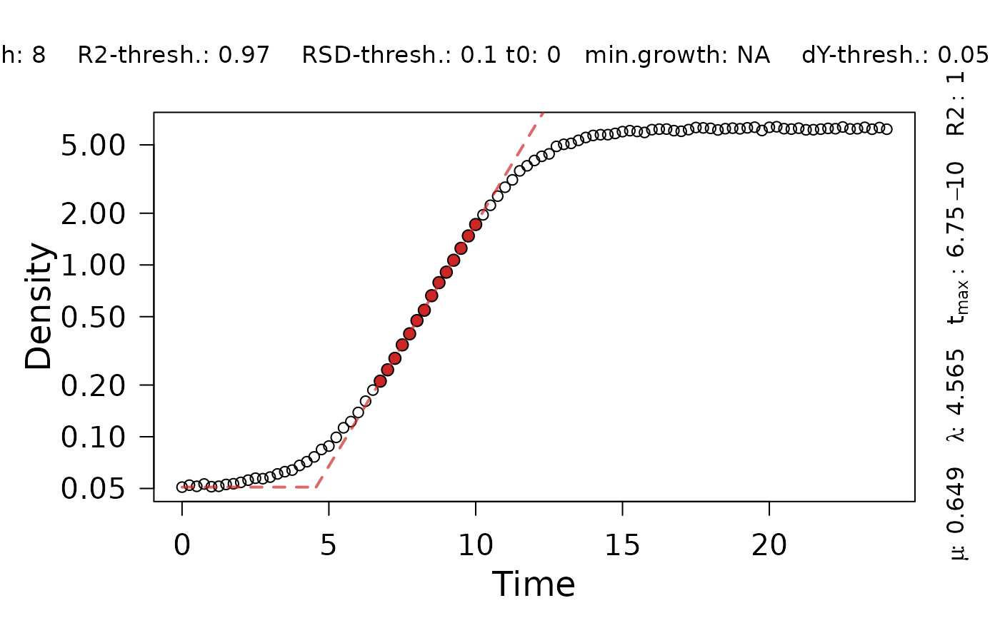

Fit an exponential growth model with a heuristic linear method
Source:R/linear_fits.R
growth.gcFitLinear.RdDetermine maximum growth rates from the log-linear part of a growth curve using a heuristic approach similar to the ``growth rates made easy''-method of Hall et al. (2013).
Usage
growth.gcFitLinear(
time,
data,
gcID = "undefined",
quota = 0.95,
control = growth.control(t0 = 0, tmax = NA, log.x.gc = FALSE, log.y.lin = TRUE,
min.growth = NA, max.growth = NA, lin.h = NULL, lin.R2 = 0.97, lin.RSD = 0.1, lin.dY
= 0.05, biphasic = FALSE)
)Arguments
- time
Vector of the independent variable (usually: time).
- data
Vector of dependent variable (usually: growth values).
- gcID
(Character) The name of the analyzed sample.
- quota
(Numeric, between 0 an 1) Define what fraction of \(mu_{max}\) the slope of regression windows adjacent to the window with highest slope should have to be included in the overall linear fit.
- control
A
grofit.controlobject created withgrowth.control, defining relevant fitting options.- log.x.gc
(Logical) Indicates whether ln(x+1) should be applied to the time data for linear and spline fits. Default:
FALSE.- log.y.lin
(Logical) Indicates whether ln(y/y0) should be applied to the growth data for linear fits. Default:
TRUE- min.growth
(Numeric) Indicate whether only growth values above a certain threshold should be considered for linear regressions.
- max.growth
(Numeric) Indicate whether only growth values below a certain threshold should be considered for linear regressions.
- t0
(Numeric) Minimum time value considered for linear and spline fits.
- tmax
(Numeric) Minimum time value considered for linear and spline fits.
- lin.h
(Numeric) Manually define the size of the sliding window . If
NULL, h is calculated for each samples based on the number of measurements in the growth phase of the plot.- lin.R2
(Numeric) R2 threshold for
growth.gcFitLinear- lin.RSD
(Numeric) Relative standard deviation (RSD) threshold for calculated slope in
growth.gcFitLinear- lin.dY
(Numeric) Enter the minimum percentage of growth increase that a linear regression should cover.
- biphasic
(Logical) Shall
growth.gcFitLineartry to extract growth parameters for two different growth phases (as observed with, e.g., diauxic shifts) (TRUE) or not (FALSE)?
Value
A gcFitLinear object with parameters of the fit. The lag time is
estimated as the intersection between the fit and the horizontal line with
\(y=y_0\), where y0 is the first value of the dependent variable.
Use plot.gcFitSpline to visualize the linear fit.
- raw.time
Raw time values provided to the function as
time.- raw.data
Raw growth data provided to the function as
data.- filt.time
Filtered time values used for the heuristic linear method.
- filt.data
Filtered growth values.
- log.data
Log-transformed, filtered growth values used for the heuristic linear method.
- gcID
(Character) Identifies the tested sample.
- FUN
Linear function used for plotting the tangent at mumax.
- fit
lmobject; result of the final call oflmto perform the linear regression.- par
List of determined growth parameters.
y0: Minimum growth value considered for the heuristic linear method.dY: Difference in maximum growth and minimum growth.A: Maximum growth.y0_lm: Intersection of the linear fit with the abscissa.mumax: Maximum growth rate (i.e., slope of the linear fit).tD: Doubling time.mu.se: Standard error of the maximum growth rate.lag: Lag time.tmax_start: Time value of the first data point within the window used for the linear regression.tmax_end: Time value of the last data point within the window used for the linear regression.t_turn: For biphasic growth: Time of the inflection point that separates two growth phases.mumax2: For biphasic growth: Growth rate of the second growth phase.tD2: Doubling time of the second growth phase.y0_lm2: For biphasic growth: Intersection of the linear fit of the second growth phase with the abscissa.lag2: For biphasic growth: Lag time determined for the second growth phase..tmax2_start: For biphasic growth: Time value of the first data point within the window used for the linear regression of the second growth phase.tmax2_end: For biphasic growth: Time value of the last data point within the window used for the linear regression of the second growth phase.
- ndx
Index of data points used for the linear regression.
- ndx2
Index of data points used for the linear regression for the second growth phase.
- control
Object of class
grofit.controlcontaining list of options passed to the function ascontrol.- rsquared
R2 of the linear regression.
- rsquared2
R2 of the linear regression for the second growth phase.
- fitFlag
(Logical) Indicates whether linear regression was successfully performed on the data.
- fitFlag2
(Logical) Indicates whether a second growth phase was identified.
- reliable
(Logical) Indicates whether the performed fit is reliable (to be set manually).
Details
The algorithm works as follows:
Fit linear regressions (Theil-Sen estimator) to all subsets of
hconsecutive, log-transformed data points (sliding window of sizeh). If for example \(h=5\), fit a linear regression to points 1 ... 5, 2 ... 6, 3 ... 7 and so on.Find the subset with the highest slope \(mu_{max}\). Do the R2 and relative standard deviation (RSD) values of the regression meet the in
lin.R2andlin.RSDdefined thresholds and do the data points within the regression window account for a fraction of at leastlin.dYof the total growth increase? If not, evaluate the subset with the second highest slope, and so on.Include also the data points of adjacent subsets that have a slope of at least \(quota \cdot mu{max}\), e.g., all regression windows that have at least 95% of the maximum slope.
Fit a new linear model to the extended data window identified in step 3.
If biphasic = TRUE, the following steps are performed to define a second growth phase:
Perform a smooth spline fit on the data with a smoothing factor of 0.5.
Calculate the second derivative of the spline fit and perform a smooth spline fit of the derivative with a smoothing factor of 0.4.
Determine local maxima and minima in the second derivative.
Find the local minimum following \(mu_{max}\) and repeat the heuristic linear method for later time values.
Find the local maximum before \(mu_{max}\) and repeat the heuristic linear method for earlier time values.
Choose the greater of the two independently determined slopes as \(mu_{max}2\).
References
Hall, BG., Acar, H, Nandipati, A and Barlow, M (2014) Growth Rates Made Easy. Mol. Biol. Evol. 31: 232-38, DOI: 10.1093/molbev/mst187
Petzoldt T (2022). growthrates: Estimate Growth Rates from Experimental Data. R package version 0.8.3, https://CRAN.R-project.org/package=growthrates.
Theil, H.(1992). A rank-invariant method of linear and polynomial regression analysis. In: Henri Theil’s contributions to economics and econometrics. Springer, pp. 345–381. DOI: 10.1007/978-94-011-2546-8_20
See also
Other growth fitting functions:
growth.drFit(),
growth.gcBootSpline(),
growth.gcFitModel(),
growth.gcFitSpline(),
growth.gcFit(),
growth.workflow()
Examples
# Create random growth dataset
rnd.dataset <- rdm.data(d = 35, mu = 0.8, A = 5, label = "Test1")
# Extract time and growth data for single sample
time <- rnd.dataset$time[1,]
data <- rnd.dataset$data[1,-(1:3)] # Remove identifier columns
# Perform linear fit
TestFit <- growth.gcFitLinear(time, data, gcID = "TestFit",
control = growth.control(fit.opt = "l"))
plot(TestFit)
